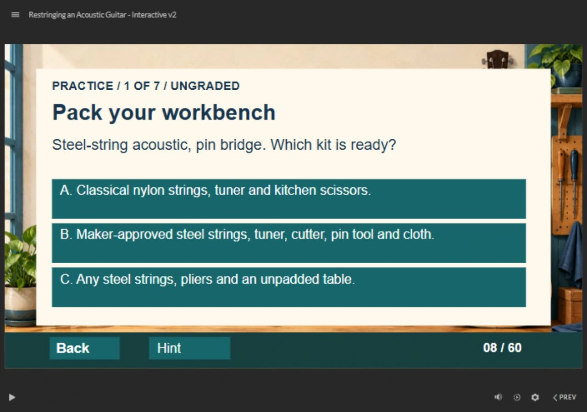
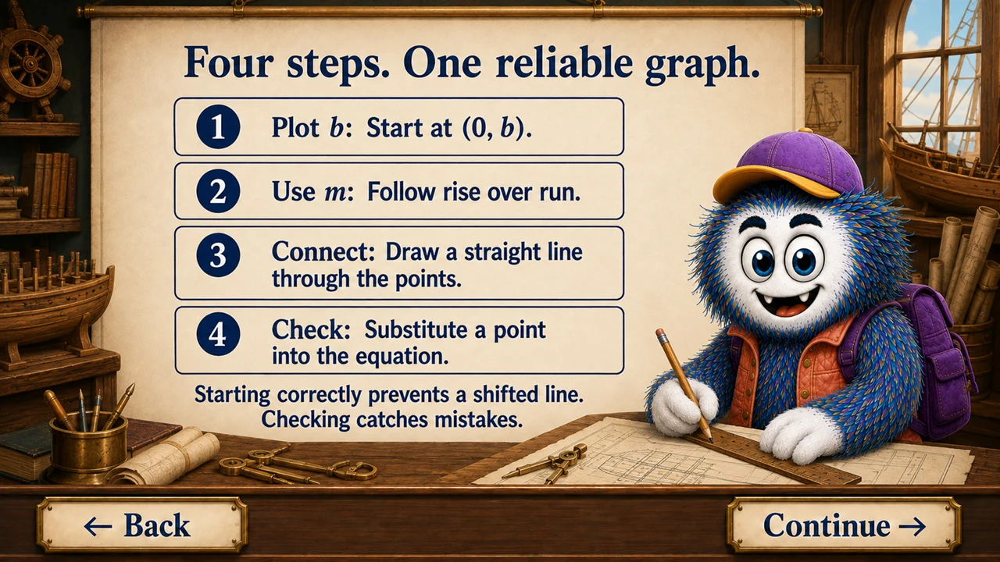
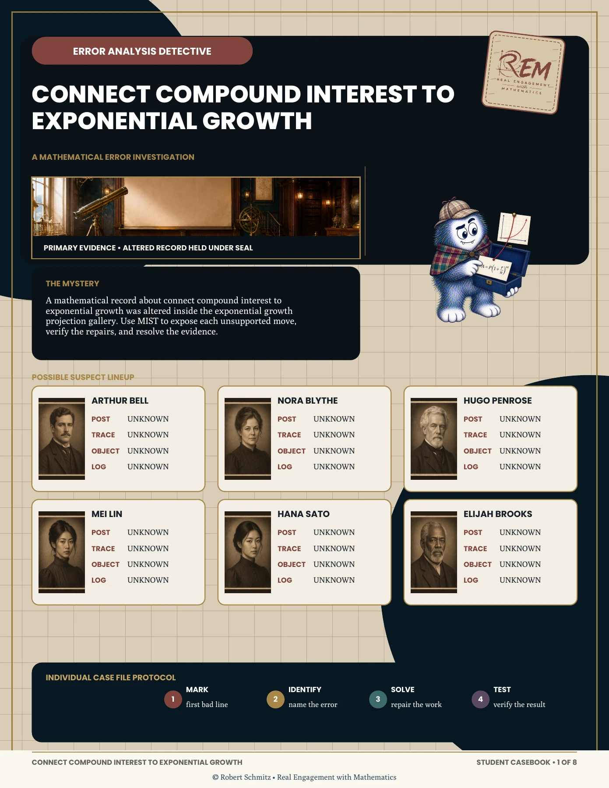
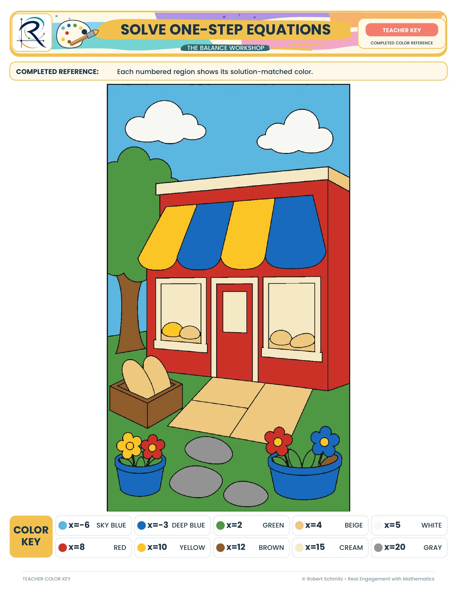
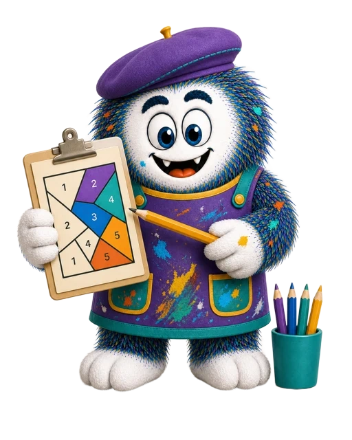
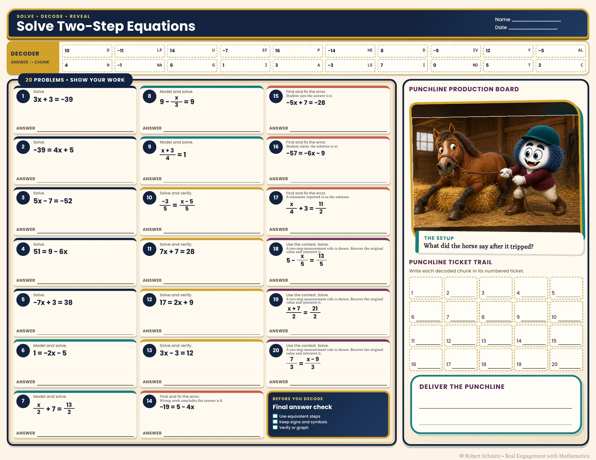
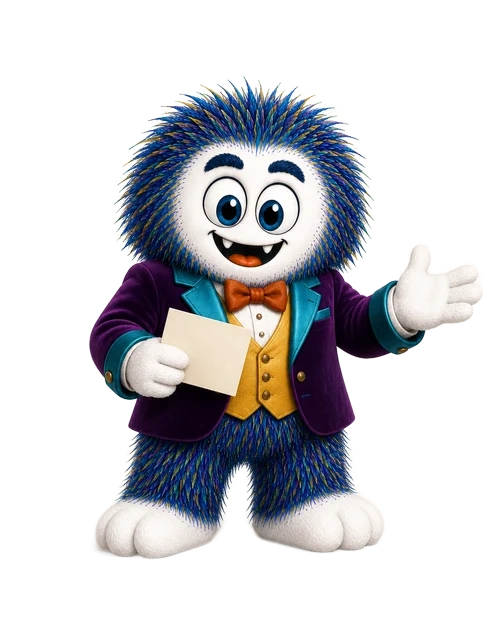
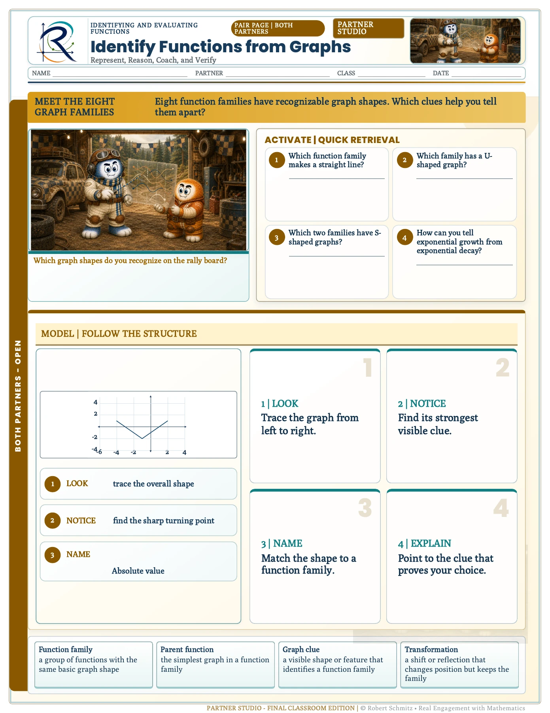
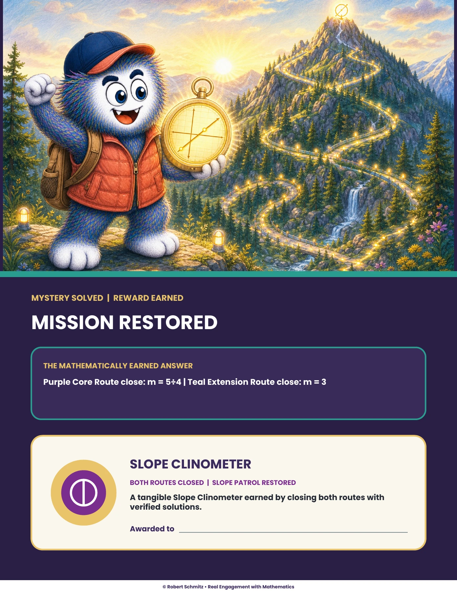

The portfolio / Robert Schmitz
Good learning gives you
something to do.
Make a decision. Investigate an error. Coach a partner. Explore the experiences I design—and the thinking behind them.
01 / Interactive learning
Step into the learner’s seat.
Browser lessons and scenarios that turn a next step into a decision.
What do you say
next?
Workplace learning · Independent concept
Make room for a better conversation.
A three-decision manager scenario asks you to address the missed work, hear the obstacle, and agree on a plan.
Try the conversation ↗
Articulate Storyline · Procedural learning
A different subject.
The same design discipline.
Restringing an Acoustic Guitar brings equipment choices, troubleshooting, and an observed hands-on task into one lesson.
Explore the guitar lesson ↗
Articulate Storyline · Mathematics
One line. A sequence of decisions.
Graphing Slope-Intercept Form connects modeled examples, practice, feedback, and a 20-question quiz.
Take the quick course tour ↗02 / Teacher resources
Seven ways to make
practice worth doing.
Each resource has its own case study, clean pages from the actual materials, and a distinct learning purpose. Meet Scribble along the way.

01 / Compound interest & exponential growth
Error Analysis Detective
A mystery gives learners a reason to inspect the mathematics, challenge a claim, and defend a correction.
Explore the design ↗
02 / Solving one-step equations
One-Step Equation Task Cards
A 50-card bank becomes more useful when teachers can choose a purposeful set in a few moments.
Explore the design ↗

03 / Solving one-step equations
Color By Number
An emerging picture gives repeated equation practice a visible destination.
Watch the walkthrough ↗

04 / Solving two-step equations
Punchline Math
Solve, decode, reveal: a small piece of the punchline rewards each completed problem.
Watch the walkthrough ↗
05 / Identify functions from graphs
Rally Coach
Give collaboration a script that moves the reasoning forward without taking over the pencil.
Watch the walkthrough ↗
06 / Calculating slope
Slope Patrol
At Gradient Ridge, a calculated slope becomes the signal that sends the patrol to its next station.
Watch the walkthrough ↗
07 / Subtracting polynomials
Guided Notes
A familiar lesson structure guides learners from a concrete problem to independent mathematical work.
Explore the design ↗03 / Behind the experiences
The thinking that holds it together.
Explore the planning, facilitator support, and review practices behind the learner-facing work.
The architecture behind 144 lessons
Curriculum sequence, common routines, and aligned teacher support.
Put the resources to work
Room layouts and facilitator guidance for classroom routines.
Make misconceptions visible
A task-to-evidence map connects student work with useful feedback.
Build for Monday morning
A workshop agenda and transfer job aid for adult learners.
Plan the interaction before the build
A 16-slide storyboard and working HTML feedback prototype.
Keep judgment in the workflow
How I review AI-assisted explanations and assessment drafts.